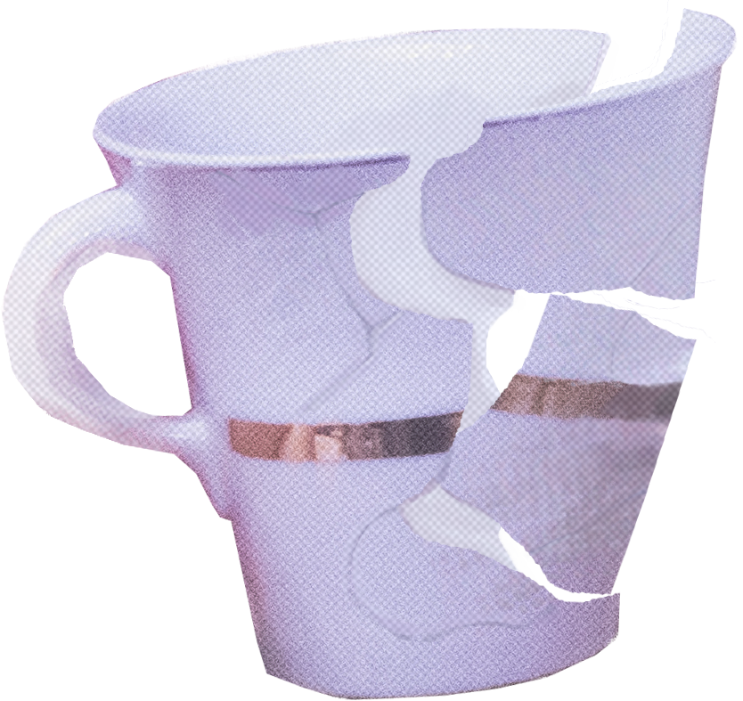

ARCHIVO RECUPERADO 05/07PERMANENCIA
Y no me van a convencer,
algunos sí saben crecer.
A otros,
nos erosiona el tiempo.
Pasa un segundo,
ella me ve.
Se siente casi como fe,
y me convierto en un momento.
Pero el momento terminó.
Y ya no quiero más ser yo,
quiero que elijas lo que creo.
Y yo,
que muero por saber,
pero no me animo a creer
en todo aquello que no veo.
Hay veces que no quiero más.
Yo siento que te desfasás,
y que te aburre mi torpeza.
Y no me canso de querer.
Pero,
¿vos te cansás de hacer
que no me vuele la cabeza?
Nunca me olvidaste.
Pero linda,
todavía queda tiempo.
No intento decir nada
y al final
siempre te digo lo que siento.
Falta una cinta.
- C